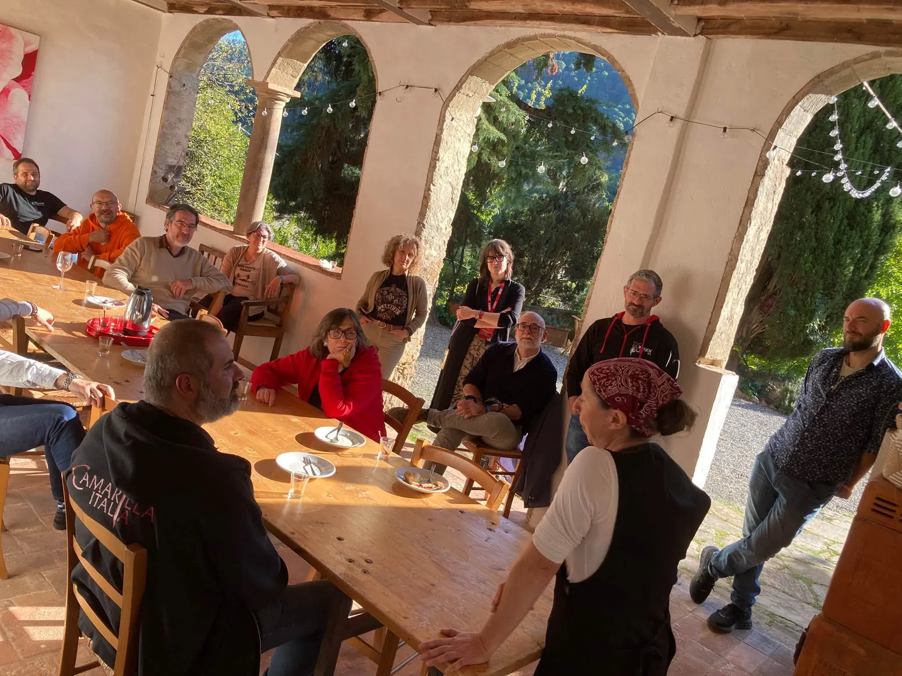
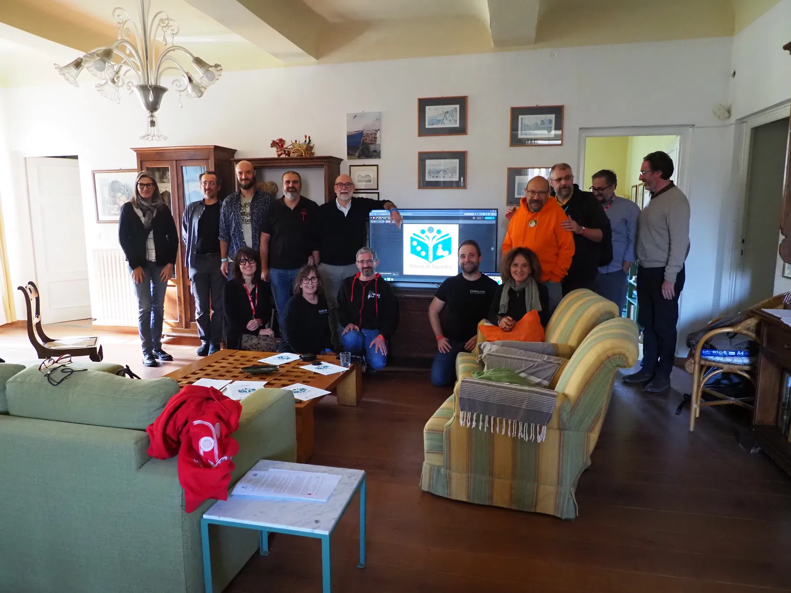
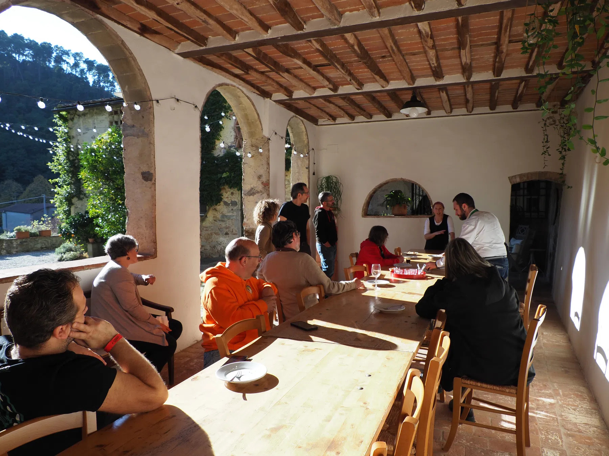
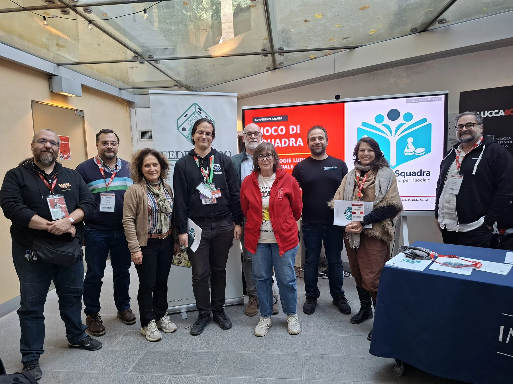
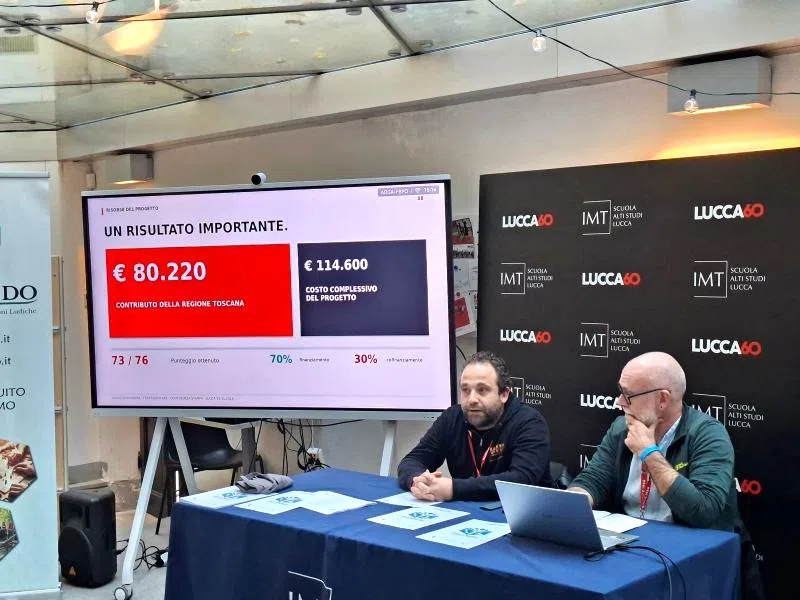
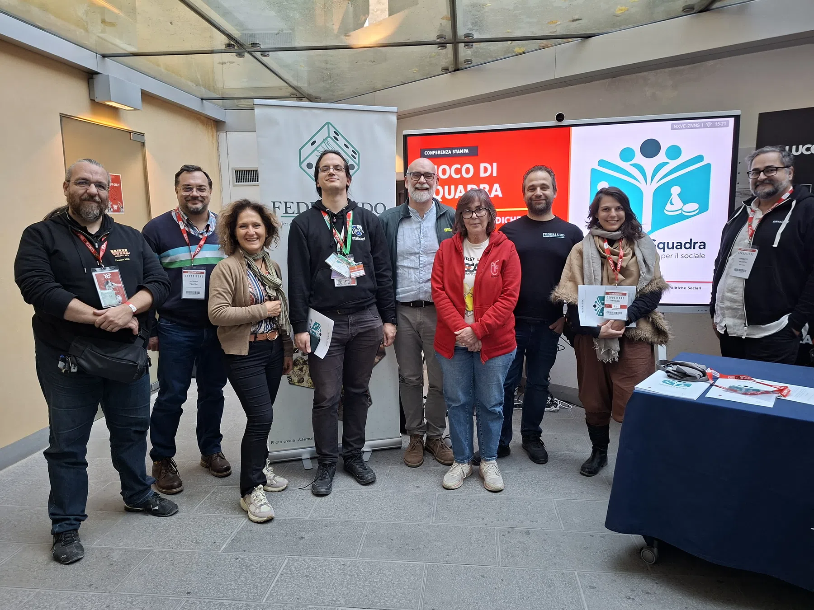

Pieve di Compito · Capannori
Lucca Comics & Games
Ci sono incontri che segnano il passaggio dalle idee ai fatti. Per Gioco di Squadra – Metodologie ludiche per il sociale, il 31 ottobre e il 1° novembre hanno rappresentato proprio questo: due giornate decisive per dare avvio a un percorso condiviso che nei prossimi mesi coinvolgerà associazioni, istituzioni e comunità di tutta la Toscana.
Le basi di un anno di lavoro insieme.
All'Agriturismo Alle Camelie di Pieve di Compito, nel comune di Capannori, si sono riuniti Federludo APS, capofila, e i rappresentanti di tutte le dieci associazioni partner di Gioco di Squadra per il primo incontro operativo del progetto. Il kick-off è stato soprattutto un momento di lavoro: confrontarsi sulle attività previste, sulla distribuzione dei compiti, sul coordinamento tra le associazioni e su come rendere concreto un programma che attraverserà territori e realtà molto diverse.
Accanto ai partner hanno partecipato anche rappresentanti della rete dei sostenitori, contribuendo ad avviare il dialogo con gli enti e le organizzazioni locali. L'obiettivo condiviso è chiaro: utilizzare il gioco da tavolo, il gioco di ruolo e il gioco di ruolo dal vivo per costruire occasioni di aggregazione, contrastare l'isolamento e favorire relazioni più inclusive.

Il consigliere regionale Luca Rossi Romanelli al fianco della rete.
Particolarmente importante è stata la presenza di Luca Rossi Romanelli, consigliere regionale della Toscana, intervenuto per portare i saluti della Regione e partecipare al confronto con il partenariato.
Il suo contributo non si è limitato al momento istituzionale iniziale: il consigliere ha preso parte alla discussione e si è trattenuto con i partecipanti anche durante il pranzo, proseguendo il dialogo sulle possibilità di collaborazione e sulle prospettive di progettazione futura. Un'occasione preziosa per avvicinare il lavoro delle associazioni alle istituzioni regionali e ragionare su sviluppi capaci di andare oltre il singolo progetto.


La giornata si è così chiusa con qualcosa di più di un semplice calendario di attività: sono state poste le basi organizzative e relazionali per lavorare insieme fino alla fine del 2027, valorizzando le competenze dei partner e costruendo una rete in grado di agire in modo coordinato nei diversi contesti territoriali.
A Lucca Comics & Games, il progetto incontra il pubblico.
Il giorno successivo, nell'ambito di Lucca Comics & Games 2026, la conferenza stampa ospitata presso la Biblioteca della Scuola IMT Alti Studi Lucca ha rappresentato il primo grande momento di comunicazione pubblica di Gioco di Squadra.
Presentare il progetto all'interno di una manifestazione di riferimento per il mondo ludico ha permesso di incontrare interlocutori del settore, associazioni, operatori e cittadini, mettendo al centro un messaggio preciso: il gioco può essere uno strumento concreto di inclusione sociale, partecipazione e costruzione di comunità. La conferenza è stata l'occasione per illustrare gli obiettivi, le attività previste, il ruolo di Federludo APS come capofila e il contributo delle dieci associazioni partner e dei sostenitori.

La risposta della stampa ha dato ulteriore forza a questo avvio. Nei giorni successivi, la notizia è stata ripresa da testate locali e portali informativi in numerose aree della regione, da Lucca a Pisa, da Arezzo a Siena fino alla Maremma, contribuendo a far conoscere le iniziative anche lontano dalla sede della conferenza.


Una rete che lavora, un progetto che comincia.
Le due giornate hanno dato a Gioco di Squadra una duplice partenza: operativa, con il lavoro comune del partenariato; pubblica, con la presentazione alle comunità e alla stampa. Nei prossimi mesi questa collaborazione prenderà forma attraverso iniziative ludiche, incontri, formazione e attività diffuse nei territori toscani.
La sfida sarà trasformare l'energia di questi primi incontri in opportunità reali di partecipazione e in relazioni capaci di durare. Il punto di partenza, però, è già concreto: persone, associazioni e istituzioni hanno iniziato a fare squadra.